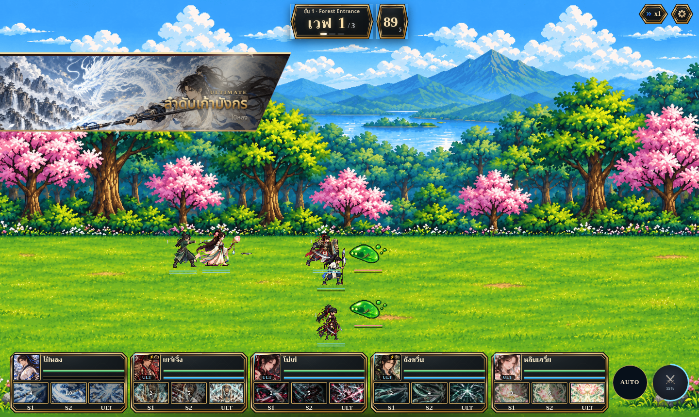
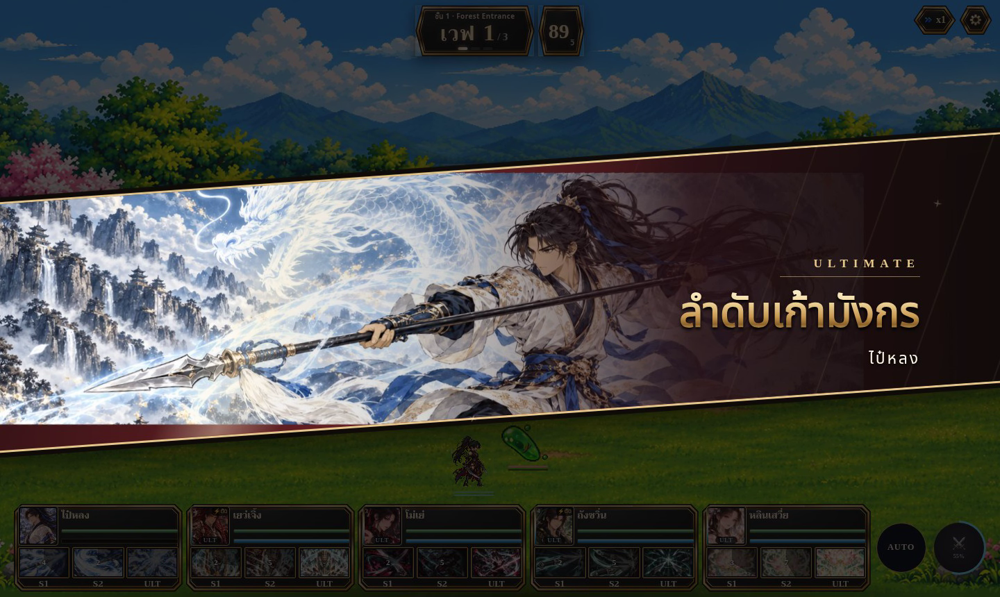

Concept: quick diagonal reveal, large existing hero artwork, darkened field, champagne gold / burgundy. Visual inspiration: Persona 5 cut-ins and Brown Dust 2 skill cutscenes. This is an original Eldervane implementation, not an exact reproduction of either reference.

